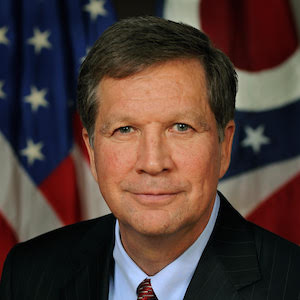

John Kasich

Republican
Ohio Governor
-
Kasich on the Spectrum
Progressive
Neutral
Conservative
You on the Spectrum
Progressive
Neutral
Conservative
Kasich on the Issues
Edit
Abortion
- Defund Planned Parenthood, like we are trying in Ohio. (Sep 2015)
- Reasonable exceptions, but respect other opinions. (Aug 2015)
- Opposes federal abortion funding. (Aug 2010)7)
- Pro-life except rape & incest; supports litmus test. (Apr 1999)
Budget and Economy
- Converted Ohio's $8B deficit to $2B surplus. (Nov 2015)
- No more silly deals; amendment for Balanced Budget. (Oct 2015)
- Wall Street is vital for the US, but often times too greedy. (Apr 2015)
Civil Rights
- Government employees should comply with gay marriage ruling. (Sep 2015)
- Can respect and love gay people. (Aug 2015)
- I support traditional marriage, but it's time to move on. (Jun 2015)
- End “racial profiling” locally, or federally. (May 1999)
Drugs
- The tsunami of drugs threatens families. (Aug 2015)
- Refuse to celebrate the drug-filled lifestyle. (May 2006)
Education
- I like the ideas in Common Core, but not the program. (Jul 2015)
- 120 million dollar student debt relief fund; plus online college. (Feb 2015)
Environment
- We should not worship environment like pantheists. (Jun 2015)
- Environment and economy are not at odds. (Apr 1999)
Foreign Policy
- Pause accepting Syrian refugees to create stringent checks. (Nov 2015)
- No more dickering & delays: Syria's Assad has got to go. (Oct 2015)
Gun Control
- Registering mentally ill is first priority in gun control. (Nov 2015)
- 2nd Amendment advocate: NRA rating changed from "F" to "A". (Aug 2015)
Health Care
- Ohio took Medicaid from 10% to 2.5%. (Oct 2015)
- Opposes ObamaCare but not all public programs. (Aug 2015)
- Accepted ObamaCare's Medicaid expansion statewide. (Feb 2015)
Issue and candidate data gathered from the Bing Political Index and OnTheIssues.org.
©2016 Hannah Arnston, Nicholas Hall, Craig Herdle, and Sam Schlesinger